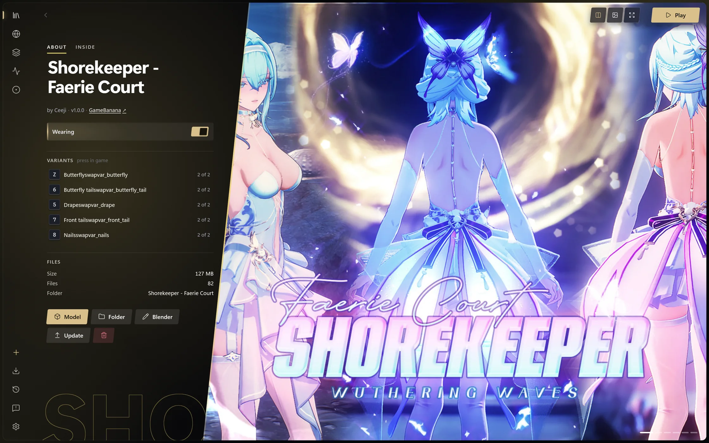
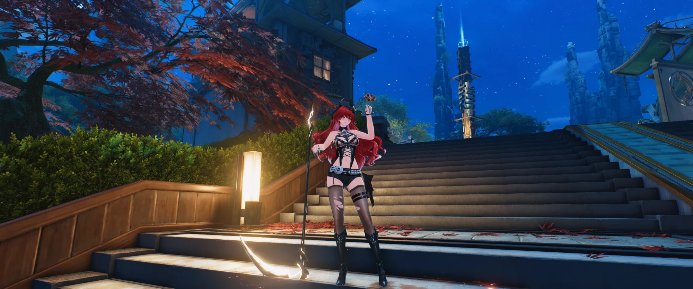
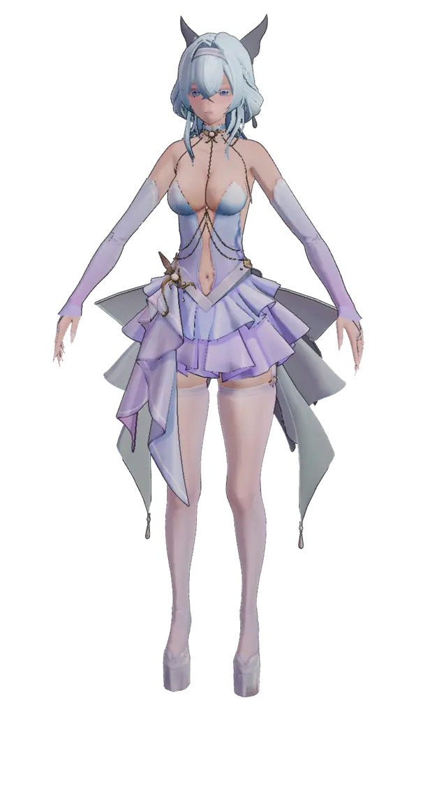
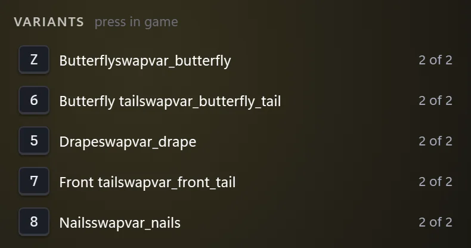
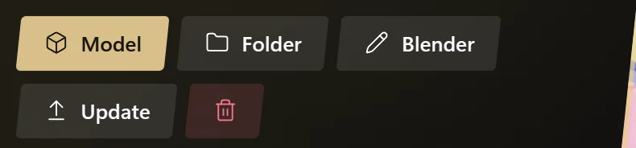
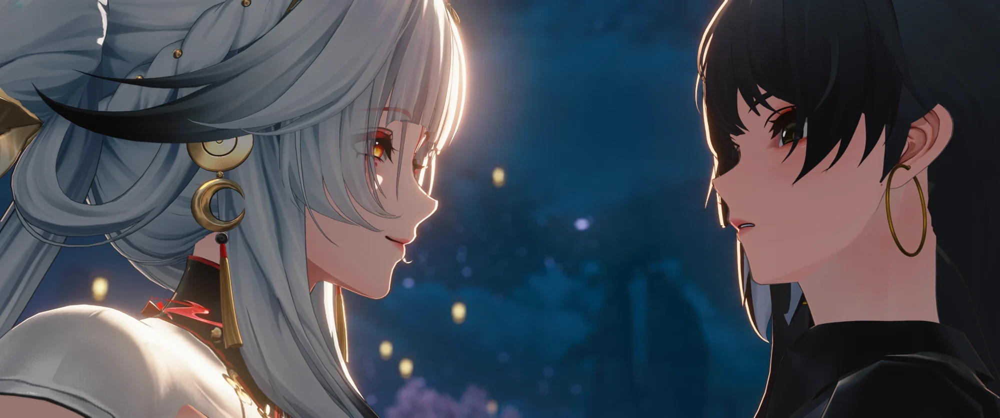

Every mod you own,
on the right character.
Timbre sorts, previews and switches your mods. Overtone draws them in the game.
Windows 10 and 11 · Timbre installs Overtone and keeps both current
Drop in a mod. Timbre reads what it draws, files it under her and shows it on her. Overtone draws it in the game, and keeps it working through updates that leave her model alone.
Library
Every character, and what she wears.
Drop a folder or a whole XXMI library on Timbre. It reads what each mod draws and files it under the right character, whatever the folder is called.

In the game
Then she wears it in the game.
Overtone draws your mods in Wuthering Waves on DirectX 12, as you chose them in Timbre. Change one while you play and the game shows it a moment later.

See it on her before you play.
Every outfit, in Timbre's model view.
Turn her around.
Drag to turn, scroll to zoom, click a piece to hide it.
As the game draws it.
Her switches set as they are in game.
Shorekeeper – Faerie Court by Ceeji

Everything a mod can do, in words you already use.
Paint on her, not on a texture.
Tattoos, freckles, recolours and repairs, in layers you see in game as you work.

Every switch, named.
A mod's toggles listed with their keys. Flip them in Timbre, the overlay or the game.

Model, folder, Blender, update.
One page per mod, with its author, its link and the one click that brings its update.

Loadouts
Save who wears what. Switch the set from Timbre, the overlay or the wheel.
DirectX 12
Overtone draws your mods on DirectX 12, and switches them from its overlay.
In the game
Overtone
Draws what you chose, and keeps drawing it through game updates.
- Draws your mods on DirectX 12
- Switches from the overlay, or the mod's own keys
- Keeps mods working through updates that leave a model alone
On your desktop
Timbre
Where you find, try on and choose. Overtone works without it.
- Sorts your mods by character
- Shows each outfit on its character before you play
- Installs Overtone and keeps it up to date


Your mods, worn right.
Free, for Windows 10 and 11.
Hsin and Rover in Wuthering Waves